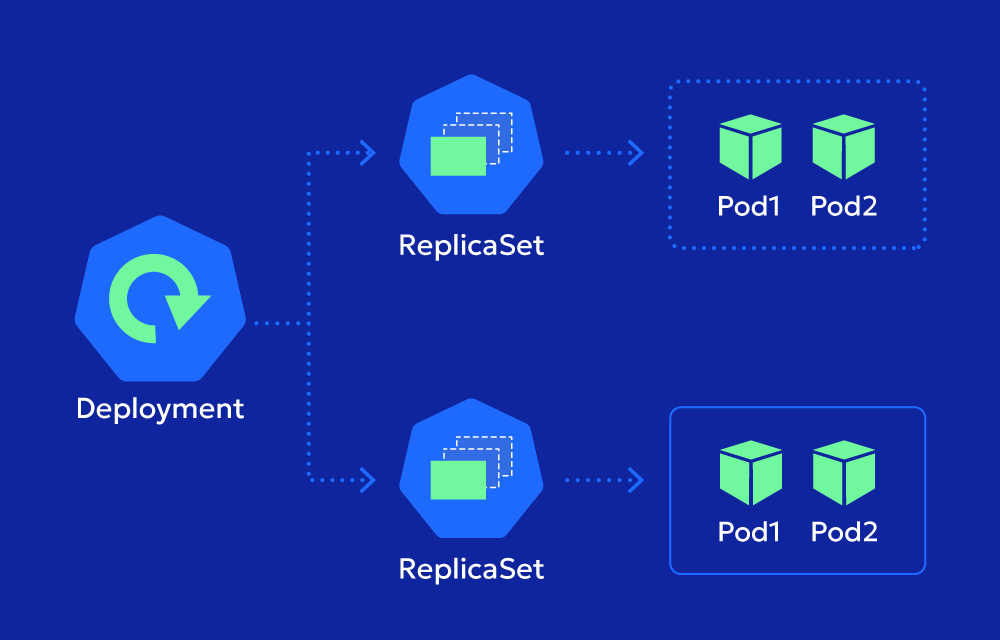

Imran Rafique
AI/ML Engineer | Gen AI Engineer | Agentic AI for Business
Building intelligent systems that solve real-world problems
Specialized in machine learning, deep learning, AI-powered solutions & autonomous agentic workflows
AI/ML Engineer | Gen AI Engineer | Agentic AI for Business
Building intelligent systems that solve real-world problems
Specialized in machine learning, deep learning, AI-powered solutions & autonomous agentic workflows
Building autonomous AI agents with LangGraph, CrewAI & AutoGen — plus regression, classification, clustering, and deep learning with TensorFlow & PyTorch
LLM integration, prompt engineering, fine-tuning, and agentic workflows with LangChain & LangGraph
Retrieval-Augmented Generation pipelines with hybrid search (FAISS + BM25) and vector databases
Cloud AI solutions using Amazon Bedrock, Vertex AI, and scalable FastAPI backend services

Containerized ML deployments with Docker, REST APIs, and production-ready MLOps pipelines
End-to-end intelligent systems — from data pipelines to multi-agent orchestration for real-world impact
Imran Rafique is an AI/ML Engineer based in Lahore, Pakistan, specializing in Generative AI, Retrieval-Augmented Generation (RAG) pipelines, and autonomous agentic workflows. He is an AWS Community Builder (AI/ML Track), selected by Amazon Web Services for demonstrating high-level proficiency in Generative AI and Cloud Architecture.
He builds end-to-end AI systems deployed on AWS and GCP — including a live AI Shopping Assistant powered by Corrective RAG on AWS Bedrock, a Car Damage Detection system on AWS Lambda, and multiple RAG-based chatbots and AI agents. His core stack includes Python, FastAPI, LangChain, LangGraph, FAISS, Amazon Bedrock, Docker, TensorFlow, and PyTorch.
He is currently available for freelance and contract AI/ML engineering work. Get in touch →